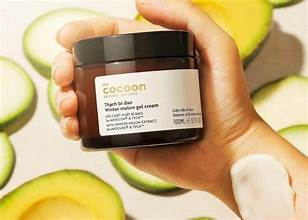

Kem dưỡng Bí Đao Cocoon – Cứu tinh cho làn da dầu mùa đông
Mùa đông đến, da tôi khô nhưng vẫn… đổ dầu, trông bóng nhờn mà vẫn căng rát. Tôi từng nghĩ không cần dưỡng ẩm vì da dầu, cho đến khi phát hiện Kem dưỡng Bí Đao Cocoon – loại kem mỏng nhẹ nhưng đủ “cứu” làn da suốt mùa lạnh.
Tại sao da dầu vẫn cần dưỡng ẩm mùa đông?
Không khí lạnh khiến da mất nước nhanh, tuyến bã nhờn tăng hoạt động để bù lại, khiến mụn dễ xuất hiện. Dưỡng ẩm đúng cách giúp cân bằng dầu – nước, giữ da ẩm và khỏe hơn.
Ưu điểm nổi bật
- Chiết xuất bí đao: thanh nhiệt, giảm viêm mụn và làm dịu da kích ứng.
- Trà xanh & rau má: chống oxy hóa, ngăn sạm da trong thời tiết khô lạnh.
- Niacinamide: phục hồi lớp màng ẩm, cải thiện độ sáng mịn tự nhiên.
“Mùa đông năm ngoái, đây là hũ kem duy nhất giúp da tôi mềm mà không bóng nhờn.”
Công dụng nổi bật
- Giúp giảm viêm, kháng khuẩn, hỗ trợ điều trị mụn nhẹ.
- Kiểm soát bã nhờn, giúp da thông thoáng và không bóng dầu.
- Cấp ẩm vừa đủ, giúp da mềm mịn và tươi sáng hơn.
Cách sử dụng
Sau bước làm sạch và toner, lấy một lượng kem vừa đủ thoa đều khắp mặt. Massage nhẹ nhàng để kem thẩm thấu hoàn toàn. Dùng 2 lần mỗi ngày (sáng và tối) để đạt hiệu quả tốt nhất.
Cảm nhận sau khi dùng
Kết cấu kem mỏng nhẹ, dễ thấm, không gây nhờn dính. Sau khoảng 1–2 tuần, da giảm bóng dầu rõ rệt, mụn ẩn giảm và da đều màu hơn. Mùi hương nhẹ tự nhiên, dễ chịu khi dùng.
← Xem thêm sản phẩm tại LEO Beauty